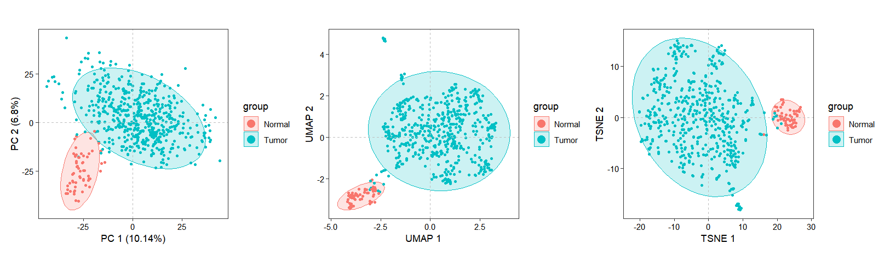
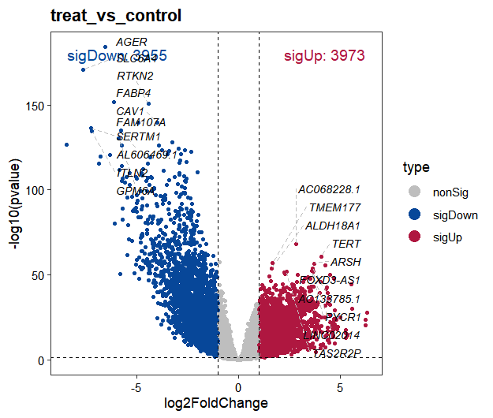
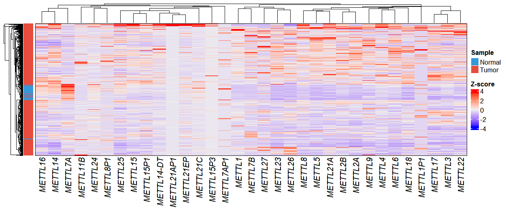
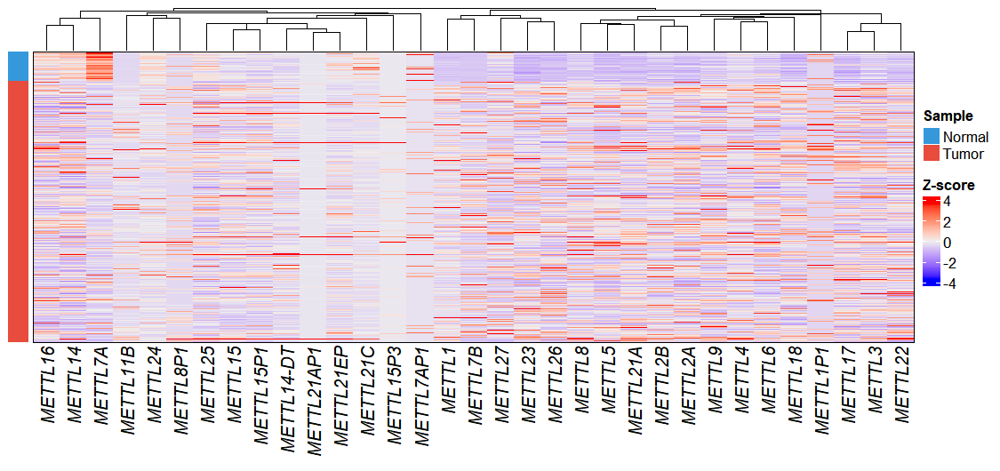
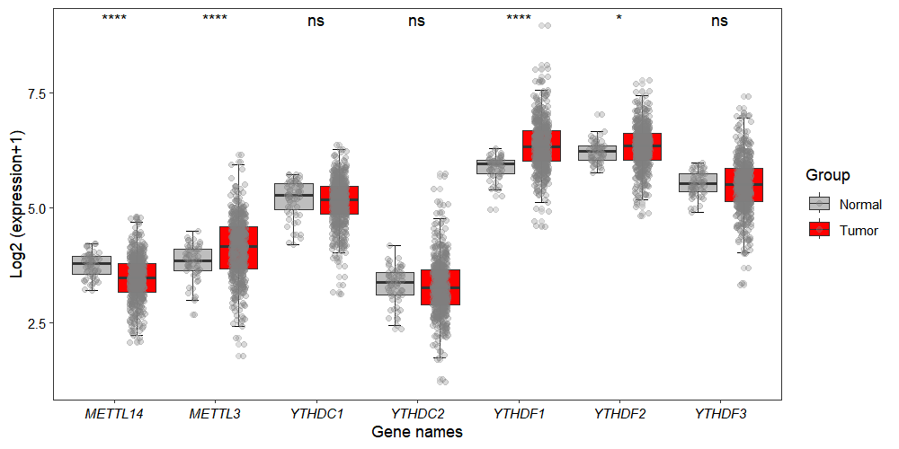
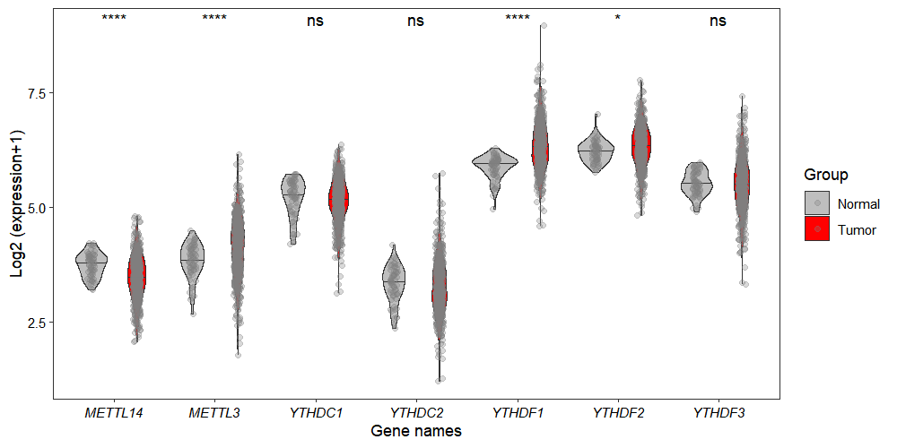
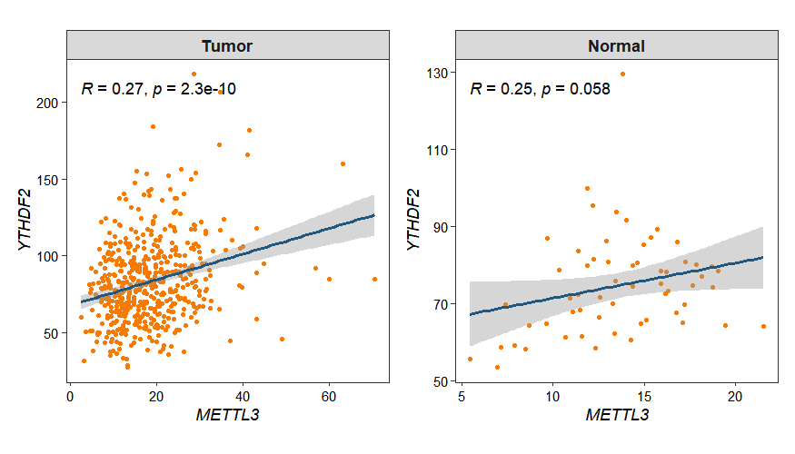
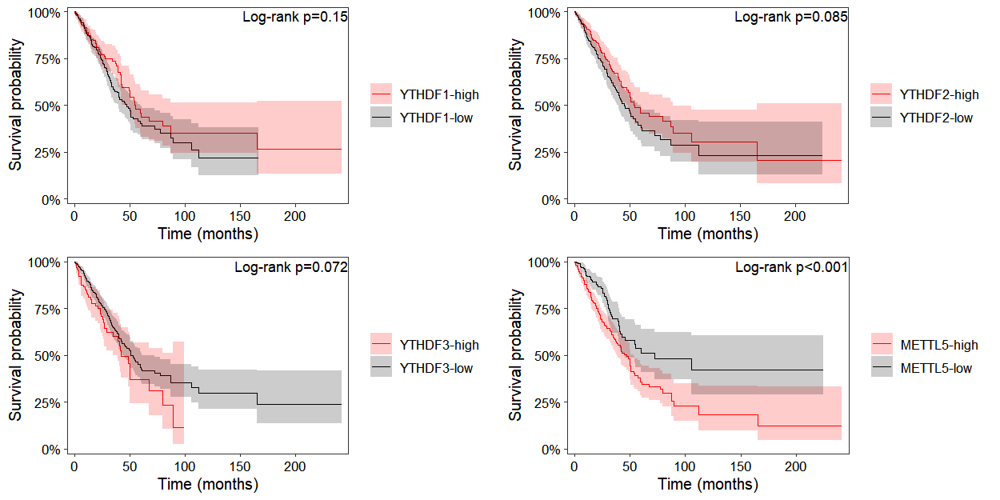

# Counts
wget https://gdc-hub.s3.us-east-1.amazonaws.com/download/TCGA-LUAD.star_counts.tsv.gz
# Phenotype data
wget https://gdc-hub.s3.us-east-1.amazonaws.com/download/TCGA-LUAD.clinical.tsv.gz
# Survival data
wget https://gdc-hub.s3.us-east-1.amazonaws.com/download/TCGA-LUAD.survival.tsv.gz3 UCSC xena example
3.1 Introduction
UCSC Xena is a comprehensive portal for multi-cancer genomic and clinical data. OmicScope enables seamless integration of gene expression count matrices, clinical phenotypes, and survival data downloaded from UCSC Xena, facilitating downstream analyses including differential expression and survival prediction.
3.2 Data download
For demonstration purposes, we use lung adenocarcinoma (LUAD) as a case study, downloading gene expression count matrices, clinical phenotype annotations, and survival outcome data from the UCSC Xena portal (https://xena.ucsc.edu/) to showcase OmicScope’s integrated analysis workflow:
3.3 Omicscope object construction
The omicscope object is constructed using the ucscZenaToObj() function, where the counts_data, pheno_data, and survival_data parameters accept the gene expression matrix, clinical phenotype table, and survival data downloaded from UCSC Xena, respectively:
library(omicScope)
obj <- ucscZenaToObj(gtf_anno = "gencode.v36.annotation.gtf.gz",
counts_data = "TCGA-LUAD.star_counts.tsv.gz",
pheno_data = "TCGA-LUAD.clinical.tsv.gz",
survival_data = "TCGA-LUAD.survival.tsv.gz")
obj
# class: omicscope
# dim: 60660 589
# metadata(0):
# assays(1): counts
# rownames(60660): ENSG00000000003.15 ENSG00000000005.6 ... ENSG00000288674.1 ENSG00000288675.1
# rowData names(3): gene_id gene_name gene_biotype
# colnames(589): TCGA-38-7271-01A TCGA-55-7914-01A ... TCGA-55-6969-01A TCGA-55-6969-11A
# colData names(96): sample id ... OS X_PATIENT3.4 Data normalization
Following object construction, the raw count matrix is normalized to TPM (Transcripts Per Million) to enable cross-sample comparisons：
obj <- normalize_data(obj, norm_type = "tpm")3.5 Dimensionality reduction
Inter-sample relationships were assessed through dimensionality reduction analyses (PCA, UMAP, and t-SNE). To optimize computational efficiency, we restricted calculations to the top highly variable genes (HVGs) by configuring the top_hvg_genes parameter, significantly reducing processing time while preserving biologically relevant variance structures:
obj <- run_reduction(object = obj,
reduction = "pca",
top_hvg_genes = 3000)
obj <- run_reduction(object = obj,
reduction = "umap",
top_hvg_genes = 3000)
obj <- run_reduction(object = obj,
reduction = "tsne",
top_hvg_genes = 3000)The dimensionality reduction results are visualized using the dim_plot() function, which generates scatter plots of samples projected onto the reduced dimensional space:

3.6 Differential expression analysis
When analyzing differential expression in datasets with large sample sizes, edgeR and limma-voom are the recommended tools for their computational speed and robust statistical framework, with limma-voom illustrated in this example:
obj <- differential_expression(obj,
method = "limma",
limmaApproach = "voom")
diff <- obj@diffExpData$limma$treat_vs_control
str(diff)
# Formal class 'diffdata' [package "omicScope"] with 9 slots
# ..@ contrastName : chr "treat_vs_control"
# ..@ method : chr "limma"
# ..@ design :List of 1
# .. ..$ : num [1:589, 1:2] 1 1 1 1 1 1 1 1 1 1 ...
# .. .. ..- attr(*, "dimnames")=List of 2
# .. .. .. ..$ : chr [1:589] "TCGA-38-7271-01A" "TCGA-55-7914-01A" "TCGA-95-7043-01A" "TCGA-73-4658-01A" ...
# .. .. .. ..$ : chr [1:2] "(Intercept)" "groupTumor"
# .. .. ..- attr(*, "assign")= int [1:2] 0 1
# .. .. ..- attr(*, "contrasts")=List of 1
# .. .. .. ..$ group: chr "contr.treatment"
# ..@ log2FCthreshold: num 1
# ..@ pvalueThreshold: num 0.05
# ..@ sigUp : int 3973
# ..@ sigDown : int 3955
# ..@ nonSig : int 52732
# ..@ data :'data.frame': 60660 obs. of 10 variables:
# .. ..$ gene_id : chr [1:60660] "ENSG00000000003.15" "ENSG00000000005.6" "ENSG00000000419.13" "ENSG00000000457.14" ...
# .. ..$ log2FoldChange: num [1:60660] 1.1 -0.429 0.296 0.526 1.678 ...
# .. ..$ AveExpr : num [1:60660] 5.87 -4.76 4.99 3.99 2.82 ...
# .. ..$ t : num [1:60660] 9.26 -1.37 3.97 7.06 13.32 ...
# .. ..$ pvalue : num [1:60660] 3.86e-19 1.70e-01 8.08e-05 4.80e-12 1.39e-35 ...
# .. ..$ padj : num [1:60660] 7.05e-18 2.33e-01 3.16e-04 4.65e-11 7.96e-34 ...
# .. ..$ B : num [1:60660] 32.26 -6.11 0.07 16.3 69.99 ...
# .. ..$ gene_name : chr [1:60660] "TSPAN6" "TNMD" "DPM1" "SCYL3" ...
# .. ..$ gene_biotype : chr [1:60660] "protein_coding" "protein_coding" "protein_coding" "protein_coding" ...
# .. ..$ type : chr [1:60660] "sigUp" "nonSig" "nonSig" "nonSig" ...
# Check
diff@data |> head()
# gene_id log2FoldChange AveExpr t pvalue padj B gene_name gene_biotype type
# 1 ENSG00000000003.15 1.0997480 5.872692 9.255036 3.862856e-19 7.051485e-18 32.25994586 TSPAN6 protein_coding sigUp
# 2 ENSG00000000005.6 -0.4286831 -4.762921 -1.374252 1.698829e-01 2.329236e-01 -6.10668869 TNMD protein_coding nonSig
# 3 ENSG00000000419.13 0.2959509 4.987883 3.969822 8.075471e-05 3.155024e-04 0.07004036 DPM1 protein_coding nonSig
# 4 ENSG00000000457.14 0.5261200 3.994452 7.056095 4.798641e-12 4.649187e-11 16.30391548 SCYL3 protein_coding nonSig
# 5 ENSG00000000460.17 1.6777640 2.815088 13.316756 1.391922e-35 7.957963e-34 69.98860263 C1orf112 protein_coding sigUp
# 6 ENSG00000000938.13 -2.2200498 4.360530 -18.605462 3.380108e-61 6.571710e-59 128.43374484 FGR protein_coding sigDownVisualizing differential expression results with volcano plots:
volcano_plot(object = obj, method = "limma")
3.7 Gene expression visualization
Before visualizing gene expression, we need to extract normalized data using the get_normalized_data function:
obj <- get_normalized_data(obj)3.7.1 Gene heatmap plot
In this analysis, we filtered for genes in the METTL family and visualized their expression patterns using the exp_heatmap_plot function to create a heatmap:
dif.res <- diff@data
gene <- subset(dif.res, startsWith(gene_name,"METTL"))
# Plot
exp_heatmap_plot(obj,
selected_gene = gene$gene_name)
The heatmap appearance can be customized by passing parameters to ComplexHeatmap through complexHeatmap_params. For instance, to disable row clustering:
exp_heatmap_plot(obj,
selected_gene = gene$gene_name,
complexHeatmap_params = list(cluster_rows = FALSE))
3.7.2 Gene expression boxplot
By default, the gene_boxViolin_plot function generates boxplot visualizations and uses the Wilcoxon test for statistical analysis:
gene_boxViolin_plot(obj,
selected_gene = c("METTL3","METTL14",
"YTHDC1","YTHDC2",
"YTHDF1","YTHDF2","YTHDF3"),
point_col = "grey50",
point_alpha = 0.3)
To visualize the data using violin plots, set the type parameter to "violin":
gene_boxViolin_plot(obj,
selected_gene = c("METTL3","METTL14",
"YTHDC1","YTHDC2",
"YTHDF1","YTHDF2","YTHDF3"),
type = "violin",
jitter.width = 0.15,
point_col = "grey50",
point_alpha = 0.3)
3.8 Gene expression correlation analysis
Gene expression is tightly and intricately regulated, often resulting in groups of genes sharing similar or contrasting expression patterns that reflect their functional relationships. The gene_cor_plot function allows visualization of pairwise gene correlations:
p1 <- gene_cor_plot(obj,
gene_1 = "METTL3",
gene_2 = "YTHDF2",
selected_group = "Tumor")
p2 <- gene_cor_plot(obj,
gene_1 = "METTL3",
gene_2 = "YTHDF2",
selected_group = "Normal")
p1 + p2
3.9 Survival analysis
Because patient survival data was included during omicscope object construction, prognostic survival analysis is now possible. Survival curves can be generated by specifying the gene of interest in the surv_plot function:
